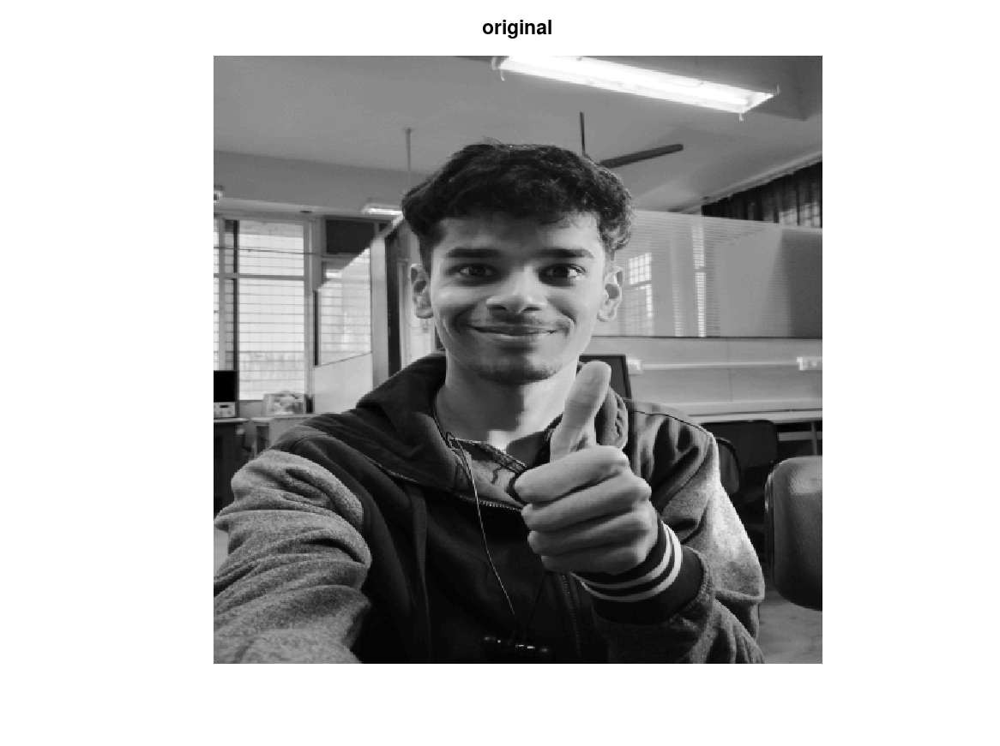
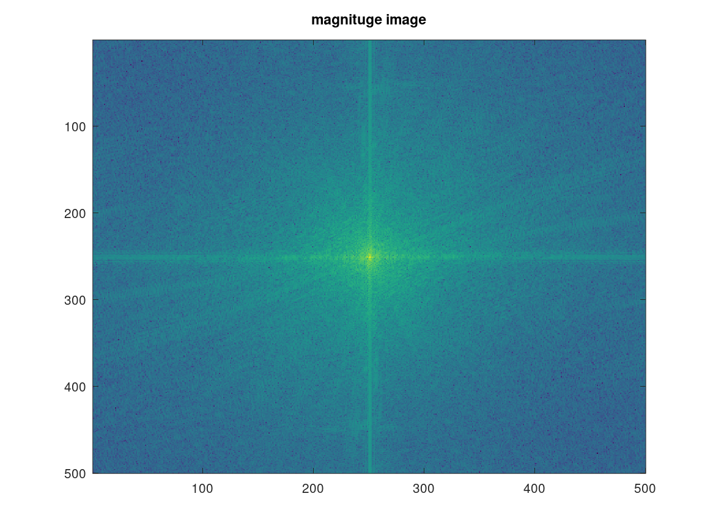
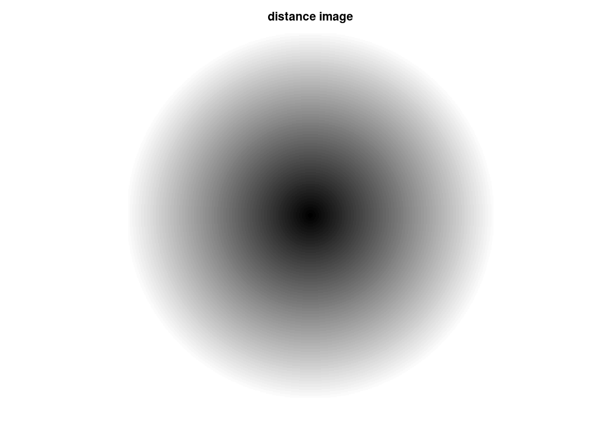
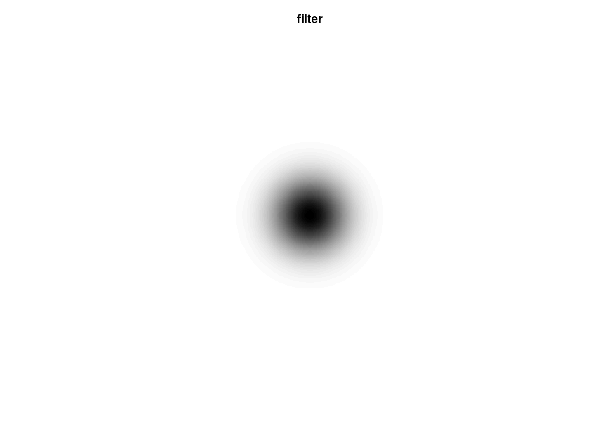
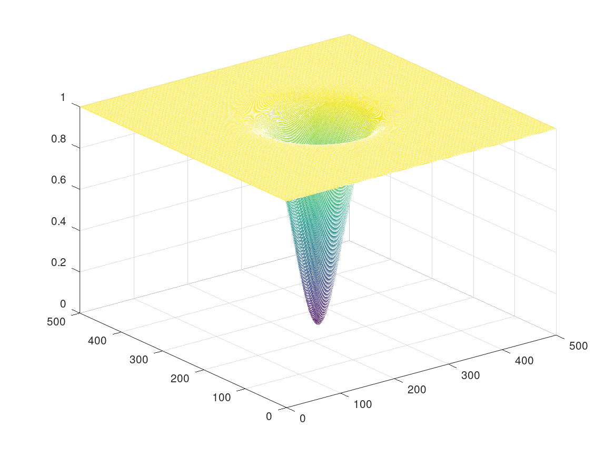
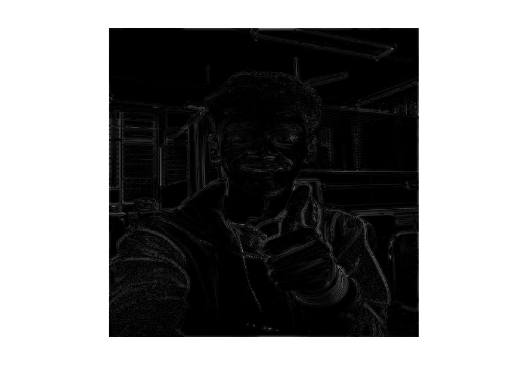

HPF_gaussian_freq_domain
clc;
clear all;
f1 = double(imread('Img_3.tif'));
[row,col]=size(f1);
for x= 1:1:row
for y= 1:1:col
f(x,y) = f1(x,y)*(-1)^(x+y);
endfor
endfor
F = fft2(f);
figure(1), imshow(uint8(f1)), title('original')
figure(2), imagesc(log(1+abs(F))), title('magnituge image')
D0 = 35;
N = 2;
for u= 1:1:row
for v= 1:1:col
D(u,v) = sqrt((u-(row/2))^2 + (v-(col/2))^2);
H(u,v) = 1-(e^-(((D(u,v))^2)/(2*D0*D0)));
endfor
endfor
figure(3), imshow(uint8(D)), title('distance image')
figure(4), imshow(H), title('filter')
figure(5), mesh(H)
G = F .* H;
g = ifft2(G);
figure(6), imshow(uint8(abs(g)))
